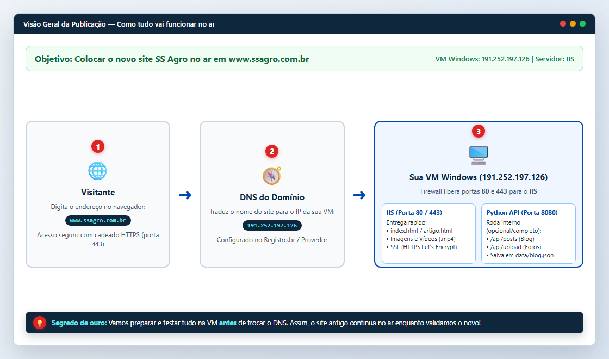
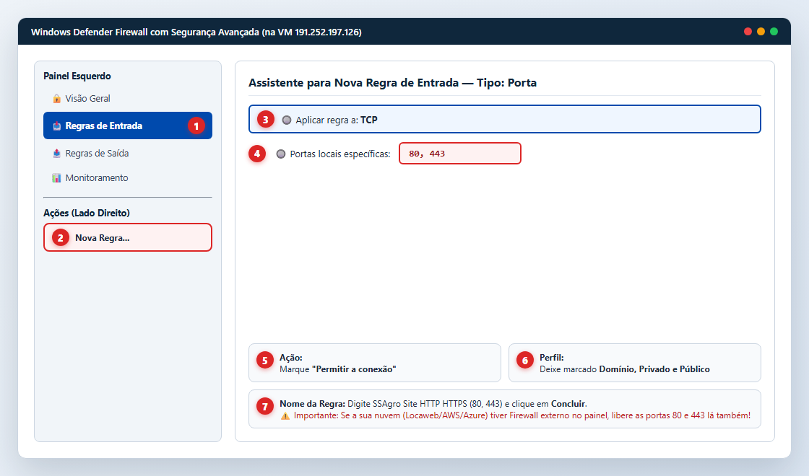
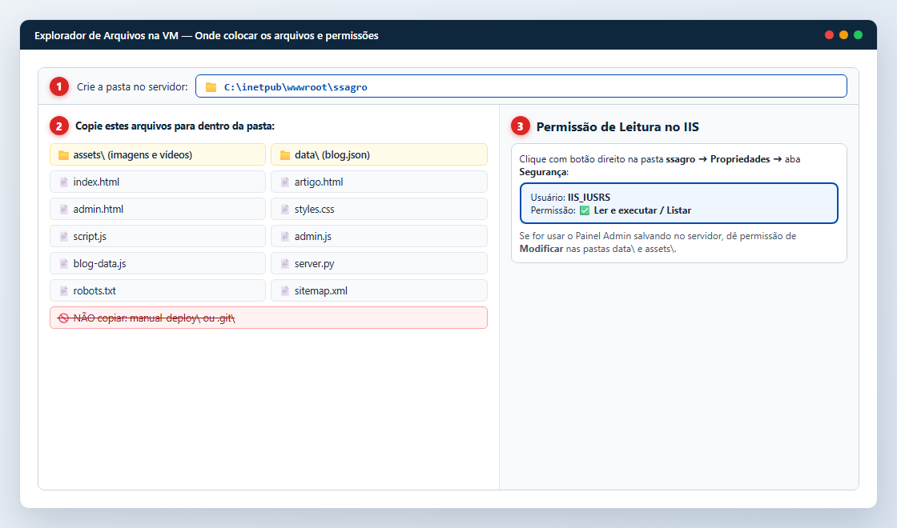
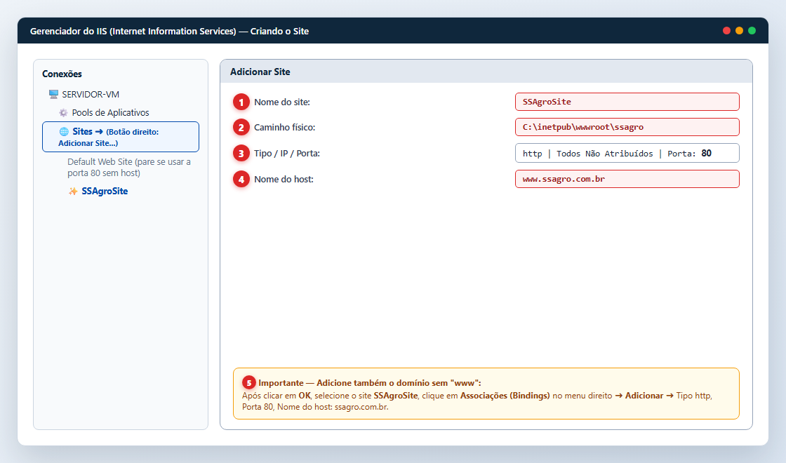
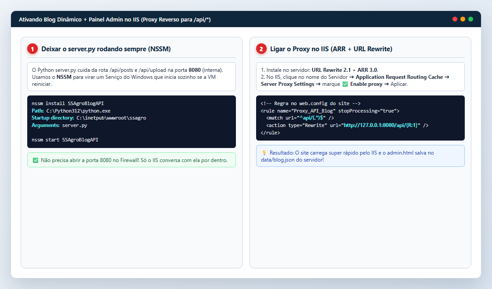
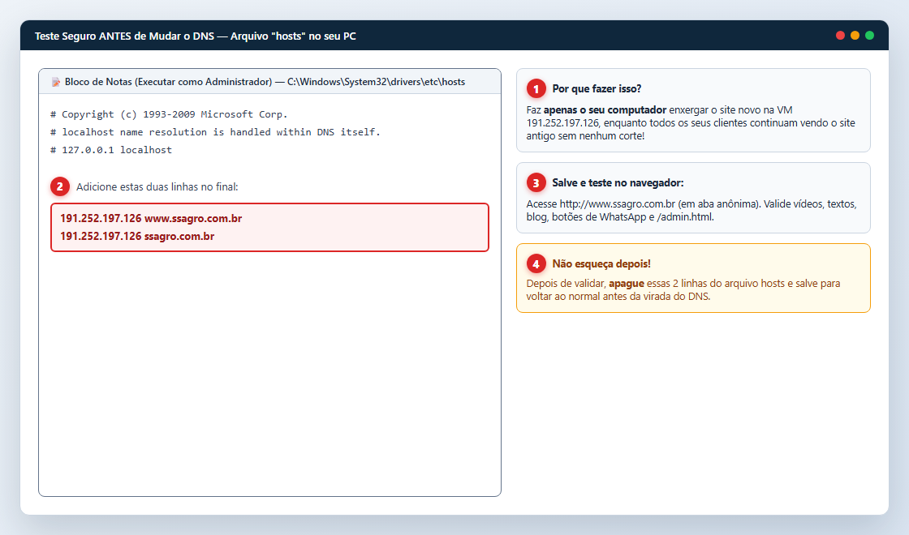
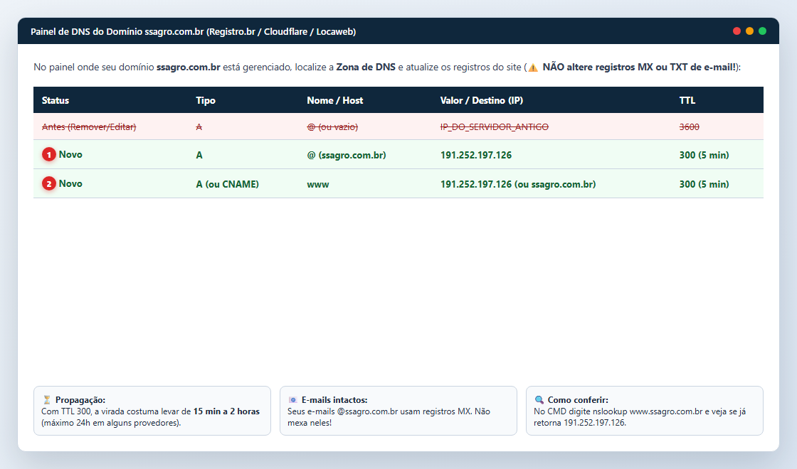
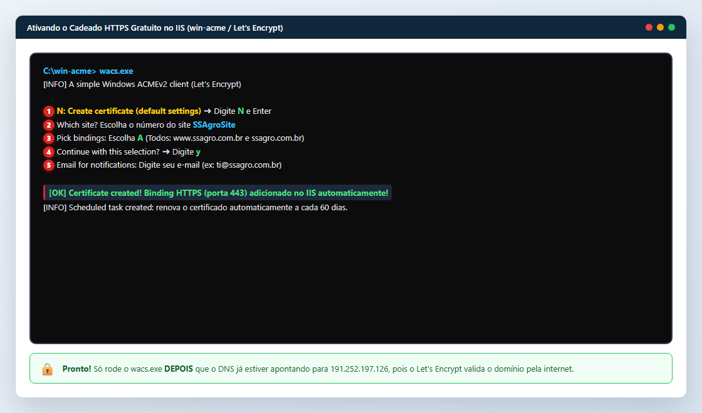

Entendendo Como Tudo Funciona (Visão Geral)
Como o domínio www.ssagro.com.br já possui um site rodando em outro servidor hoje, nós vamos fazer uma migração segura: primeiro montamos e testamos tudo na sua VM nova (191.252.197.126), e só trocamos o endereço (DNS) no final.
• Páginas e mídias (HTML, CSS, JS, fotos e vídeos MP4): o próprio IIS entrega direto e muito rápido.
• Blog Dinâmico e Painel Admin (
admin.html): usam o arquivo server.py para salvar novas notícias em data/blog.json. Na Etapa 5 vamos mostrar como ligar o IIS ao server.py (e se não ligar agora, o site abre normalmente com as 4 notícias padrão).

Preparar o IIS e Liberar o Firewall da VM (Portas 80 e 443)
Entre na sua VM (via Área de Trabalho Remota / RDP no IP 191.252.197.126) e siga os dois passos abaixo:
- Conferir se o IIS está instalado: Abra o menu Iniciar e procure por Gerenciador do IIS (ou IIS Manager). Se ainda não estiver instalado, abra o Gerenciador do Servidor (Server Manager) ➜ Adicionar Funções e Recursos ➜ marque Servidor Web (IIS) e conclua a instalação.
- Liberar as portas 80 (HTTP) e 443 (HTTPS) no Firewall do Windows:
Abra o menu Iniciar ➜ digite Windows Defender Firewall com Segurança Avançada ➜ clique em Regras de Entrada ➜ à direita clique em Nova Regra... ➜ escolha Porta ➜ TCP ➜ Portas específicas:80, 443➜ Permitir a conexão ➜ dê o nomeSSAgro Site HTTP HTTPS.
Se a sua VM estiver na Locaweb, AWS, Azure ou Google Cloud, verifique também no painel web da hospedagem se as portas TCP 80 e TCP 443 estão liberadas para a internet (entrada / inbound).

Copiar os Arquivos do Site para a VM e Dar Permissões
- Na VM, crie a pasta:
C:\inetpub\wwwroot\ssagro - Copie os arquivos do seu computador (da pasta
d:\SSAgro\Fontes\SSAgroSite) para dentro deC:\inetpub\wwwroot\ssagro:
• Pastas:assets\edata\
• Arquivos:index.html,artigo.html,admin.html,styles.css,script.js,admin.js,blog-data.js,server.py,robots.txt,sitemap.xml.
• Não precisa copiar a pastamanual-deploy\nem.git\. - Configurar Permissões de Pasta: Clique com o botão direito em
C:\inetpub\wwwroot\ssagro➜ Propriedades ➜ aba Segurança ➜ confira se o grupoIIS_IUSRStem permissão de Ler e executar. - Para permitir que o painel administrativo salve notícias e suba fotos, dê também permissão de Modificar para o usuário do sistema nas pastas
data\eassets\.

Criar o Site no IIS e Configurar os Domínios (Bindings)
- Abra o Gerenciador do IIS na VM.
- Expanda o nome do servidor à esquerda, clique com o botão direito em Sites ➜ Adicionar Site...
- Preencha exatamente assim:
• Nome do site:SSAgroSite
• Caminho físico:C:\inetpub\wwwroot\ssagro
• Tipo:http| Porta:80
• Nome do host:www.ssagro.com.br - Clique em OK.
- Agora clique sobre o site SSAgroSite na lista, e no painel da direita clique em Associações... (Bindings) ➜ Adicionar ➜ Tipo
http, Porta80, Nome do host:ssagro.com.br(sem o www, para quem digitar direto também funcionar!).
Como colocamos o Nome do host (
www.ssagro.com.br e ssagro.com.br), o IIS sabe direcionar corretamente. Caso não use outro site nesse servidor, você também pode clicar no Default Web Site e clicar em Parar (Stop) para evitar confusão.

Ativar o Blog Dinâmico + Painel Admin no IIS (Recomendado)
O site possui o painel /admin.html que envia notícias e imagens para a API em Python (server.py). Se quiser apenas publicar as páginas estáticas agora, você pode usar o web.config Básico abaixo. Mas se quiser que o Painel Gerencial salve notícias para todos os usuários no servidor, siga os 3 passos para ativar o Proxy Reverso:
- Instalar Python 3 e NSSM na VM: Instale o Python 3 na VM (marcando Add Python to PATH) e baixe o utilitário gratuito NSSM (Non-Sucking Service Manager) para transformar o
server.pyem um Serviço do Windows que inicia sozinho com o servidor. - Instalar extensões do IIS: Baixe e instale os dois módulos oficiais da Microsoft para IIS: URL Rewrite 2.1 e Application Request Routing (ARR 3.0). No IIS, clique no nome do servidor ➜ Application Request Routing Cache ➜ Server Proxy Settings ➜ marque Enable proxy e clique em Aplicar.
- Criar o arquivo
web.configdentro deC:\inetpub\wwwroot\ssagro\web.config:
<?xml version="1.0" encoding="UTF-8"?>
<configuration>
<system.webServer>
<defaultDocument>
<files>
<clear />
<add value="index.html" />
</files>
</defaultDocument>
<staticContent>
<remove fileExtension=".mp4" />
<mimeMap fileExtension=".mp4" mimeType="video/mp4" />
<remove fileExtension=".json" />
<mimeMap fileExtension=".json" mimeType="application/json" />
<remove fileExtension=".webp" />
<mimeMap fileExtension=".webp" mimeType="image/webp" />
</staticContent>
<rewrite>
<rules>
<rule name="Proxy_API_Blog" stopProcessing="true">
<match url="^api/(.*)$" />
<action type="Rewrite" url="http://127.0.0.1:8080/api/{R:1}" />
</rule>
</rules>
</rewrite>
</system.webServer>
</configuration>
<?xml version="1.0" encoding="UTF-8"?>
<configuration>
<system.webServer>
<defaultDocument>
<files>
<clear />
<add value="index.html" />
</files>
</defaultDocument>
<staticContent>
<remove fileExtension=".mp4" />
<mimeMap fileExtension=".mp4" mimeType="video/mp4" />
<remove fileExtension=".json" />
<mimeMap fileExtension=".json" mimeType="application/json" />
<remove fileExtension=".webp" />
<mimeMap fileExtension=".webp" mimeType="image/webp" />
</staticContent>
</system.webServer>
</configuration>
<rewrite> (Opção A) depois de instalar o módulo URL Rewrite no IIS. Se colocar sem o módulo instalado, o IIS exibirá erro 500.19 até você instalar o módulo ou usar a Opção B.

Testar Tudo ANTES de Mudar o Domínio (Arquivo Hosts)
Antes de apontar o DNS oficial para a nova VM, vamos fazer um truque seguro no seu computador pessoal para visualizar o site novo como se o domínio já tivesse virado — enquanto os clientes continuam acessando o site antigo sem interrupção!
- No seu computador, abra o menu Iniciar, digite Bloco de Notas, clique com o botão direito e escolha Executar como administrador.
- Clique em Arquivo ➜ Abrir e cole o caminho:
C:\Windows\System32\drivers\etc\hosts(mude o filtro de arquivos no canto inferior direito de.txtpara Todos os arquivos (*.*)). - Adicione estas duas linhas no final do arquivo e salve:
191.252.197.126 www.ssagro.com.br 191.252.197.126 ssagro.com.br
- Abra uma janela anônima do navegador e acesse
http://www.ssagro.com.br. Confira se o vídeo de abertura roda, se os cards abrem, se as notícias do blog carregam e se o/admin.htmlfunciona. - Muito importante: Assim que terminar o teste, apague essas 2 linhas do arquivo
hostse salve novamente para não esquecer seu PC travado nesse apontamento manual.

Virar o DNS de www.ssagro.com.br para o IP 191.252.197.126
Agora que você já validou que a VM está 100% pronta, é hora de fazer o domínio oficial apontar para ela.
- Descubra onde está a Zona de DNS do domínio
ssagro.com.br(normalmente é no Registro.br, na Cloudflare, ou no painel da hospedagem atual como Locaweb/Hostgator). - Localize os registros do tipo A (ou CNAME) referentes ao site e altere o IP antigo para o novo IP
191.252.197.126:
| Tipo | Nome / Entrada | Valor / Destino | TTL Recomendado |
|---|---|---|---|
| A | @ (ou vazio / ssagro.com.br) |
191.252.197.126 |
300 (5 minutos) |
| A (ou CNAME) | www |
191.252.197.126 (ou CNAME para ssagro.com.br) |
300 (5 minutos) |
NÃO APAGUE nem altere registros do tipo
MX, TXT (SPF/DKIM) ou mail / webmail! Eles controlam o recebimento dos seus e-mails (@ssagro.com.br). Mexa somente nos registros do site (@ e www).
Para conferir se o mundo já está enxergando a nova VM, abra o Prompt de Comando (CMD) no seu PC e rode:
nslookup www.ssagro.com.br 8.8.8.8
Quando o comando responder com Address: 191.252.197.126, a internet já encontrou o novo servidor!

Ativar Cadeado HTTPS (SSL Gratuito) e Checklist Final
Hoje todos os navegadores exigem HTTPS (e o seu sitemap.xml já usa https://www.ssagro.com.br). No Windows + IIS, a maneira mais fácil e gratuita de instalar e renovar o certificado automaticamente é usando o win-acme (Let's Encrypt).
nslookup da Etapa 7 já estiver retornando 191.252.197.126, porque o Let's Encrypt precisa acessar o site pela internet para emitir o certificado.
- Na VM, baixe o win-acme (
win-acme.com) e extraia paraC:\win-acme. - Abra o CMD ou PowerShell como Administrador dentro de
C:\win-acmee executewacs.exe. - No menu interativo:
• DigiteN(Criar certificado com configurações padrão)
• Escolha o número correspondente ao site SSAgroSite
• EscolhaApara incluir todos os bindings (www.ssagro.com.bressagro.com.br)
• Confirme comye informe um e-mail para alertas. - Pronto! O próprio
wacs.execria a associação HTTPS (porta 443) no IIS e agenda a renovação automática.
1. Acesse
https://www.ssagro.com.br e confirme o cadeado verde/seguro.2. Teste
http://ssagro.com.br e https://ssagro.com.br.3. Valide o carregamento do vídeo do banner, imagens e botões do WhatsApp.
4. Abra uma notícia em
https://www.ssagro.com.br/artigo.html e teste o painel https://www.ssagro.com.br/admin.html.5. Dica bônus de segurança: Nunca divulgue o link
/admin.html publicamente e, se desejar, configure autenticação por senha no IIS ou crie um caminho restrito para ele.
